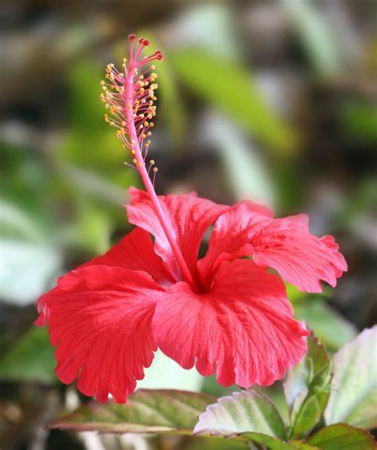

Plantes Tinctoriales
Voici quelques plantes que nous utilisons pour créer nos teintes naturelles :

Hibiscus
Fournit des teintes rouge profondes à partir de ses feuilles fermentées.

Curcuma
Sa racine utilisée depuis l’Antiquité pour obtenir un jaune lumineux.

Betterave
Betterave Fournit des teintes violet .